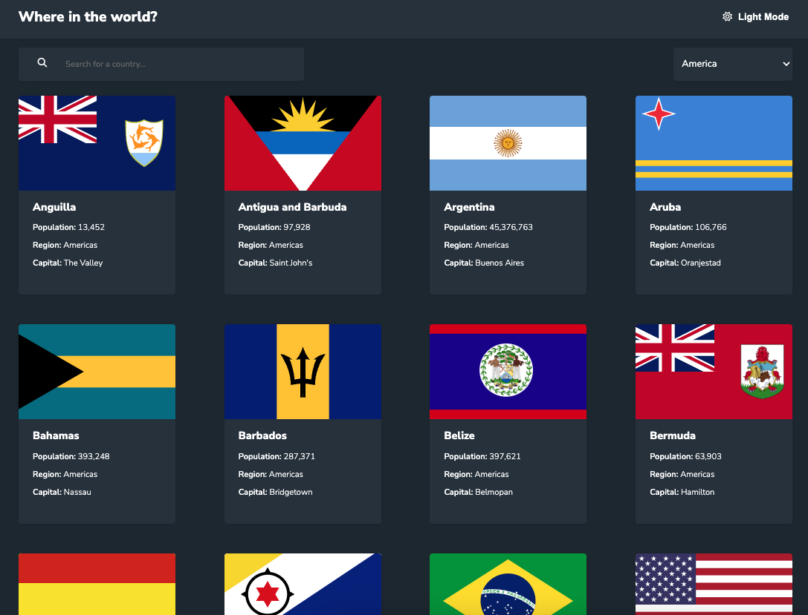

I want to use my skills in front-end development, process
improvement & human behavior to help others. This comes in the
form of helping companies live out their mission and helping
individuals utilize technology as a tool to improve the things
they care about.
Some of my specific passions are edtech, child & family,
healthcare tech, & sustainability.
Interested in digging a little deeper?
Tech stack
HTML5
CSS3
Javascript
Github
Bootstrap
Sass
React
Wordpress
Jira
Accessibility
What I've been working on
Welcome to my projects section, which is a collection of my recent
work-related and personal projects. I am currently working on new
practice projects every week from Frontend Mentor to further refine
my skills. Thus, I intend to keep this section up to date with my
latest endeavors. You can find a brief summary below for a quick
overview of each project. For more in-depth details and insights
into my development process, please refer to the corresponding
GitHub Readme file.

Where in the world?
ReactJSON
A web application that uses a county dataset to display all
the countries in the world. You can search, filter by region,
and click on the individual country to learn more
Built using React from the create-react-app template. Ability
to switch from dark-mode to light-mode
In my previous role at Indeed, I was responsible for
developing a website to store and organize ongoing research
studies on various occupations. I designed and developed the
site, and created templates to easily add in new occupations
as they were available
I chose a template theme and customized to follow Indeed's
design system. Researched & decided on the plugins to use,
including TablePress
Let's Chat!
Interested in collaborating or have any questions? I'd love to hear
from you!